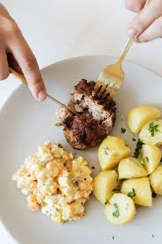
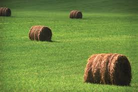
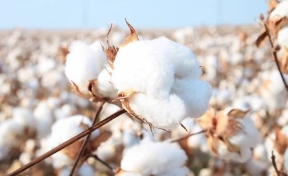
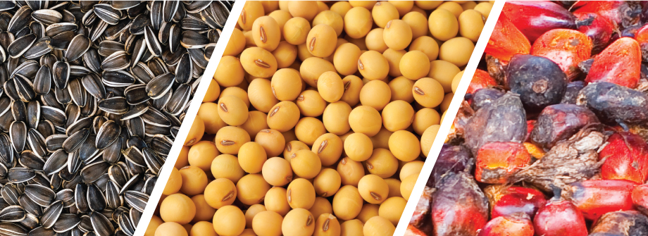
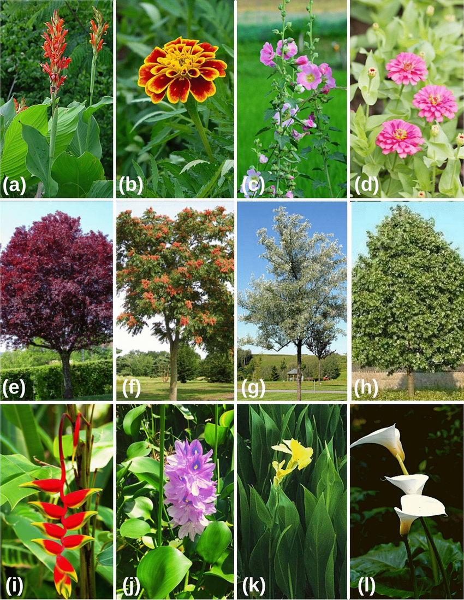
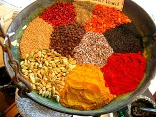
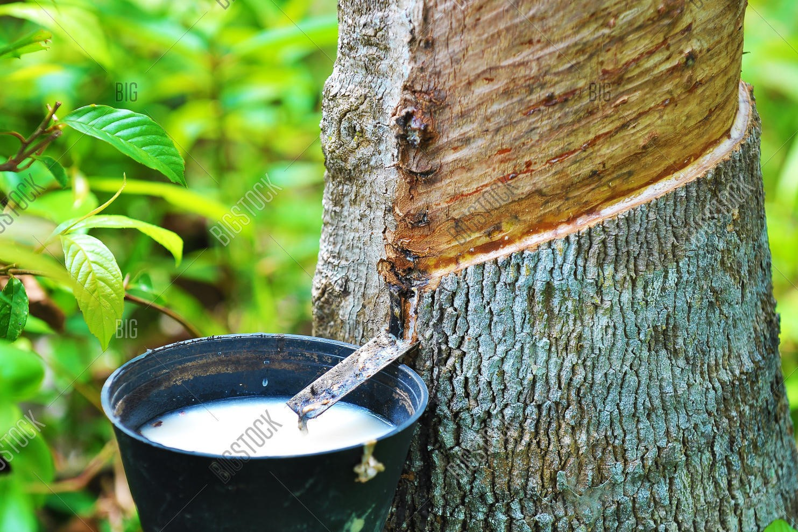
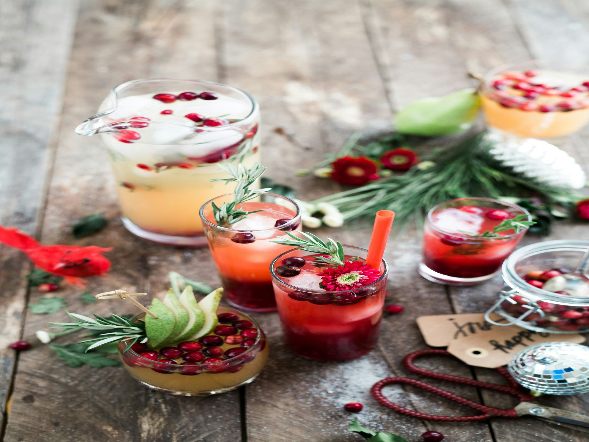

USES OF CROPS
Crops are plants product that can be grown and harvested for profit or subsistence.
crops falls into six different categories:
- food crops
- feed crops
- fiber crops
- oil crops
- ornamental crops
- Spices
- Latex
- Beverages

-
Food crops : Food crops are plants grown specifically to be consumed by people as food. They include grains, vegetables, fruits, and legumes.
Example: Yams, cassava, and plantains.

-
Feed crop : Feed crops are plants cultivated to feed livestock and other animals. They provide essential nutrients for animal growth and production.
Example: Maize, millet, and sorghum.

-
Fiber crops : Fiber crops are grown to produce fibers used in making textiles, ropes, and other products. These fibers come from the plant's stems, leaves, or seeds.
Example: Cotton (used in the textile industry) and jute.

-
Oil crops: Oil crops are plants grown for their seeds or fruits, which are processed to extract oils used for cooking, industrial purposes, or as biofuels.
Example: Soybeans, sunflower seeds, and oil palms.

-
Ornamental crops : Ornamental crops are plants grown for decorative purposes rather than for food or other utilitarian uses. They are often used in landscaping and gardening.
Example: Hibiscus, bougainvillea, and lilies.

-
Spices: Spices are aromatic substances derived from plants used to flavour, colour, or preserve food. They come from various parts of the plant, such as seeds, bark, or roots.
Example: Pepper (e.g., black and white pepper), ginger, and cloves.

-
Latex: Latex is a milky fluid produced by certain plants, which can be processed to make products like rubber and adhesives.
Example: Rubber trees (for natural rubber used in tyres and shoes).

- Beverages : Beverages are liquids prepared from plants, including fruits and herbs, which are consumed for refreshment or enjoyment.
Example: Zobo (hibiscus tea), palm wine, and kola nut drinks.